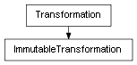

class cymel.core.datatypes.transformation.ImmutableTransformation¶

- class cymel.core.datatypes.transformation.ImmutableTransformation(val=None, **kwargs)¶
ベースクラス:
TransformationTransformationのimmutableラッパー。Methods:
clear(*args, **kwargs)トランスフォーメーション修飾属性をクリアする。
Methods Details: